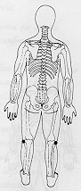
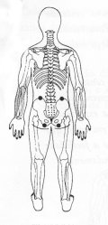

Travas de Segurança da Energia 8 - Segunda Profundidade
|
 |
TSE 8 Sentado ou deitado colocar a mão atrás do joelho correspondente na lateral externa TSE 8 . ou Cada mão sobre a nádega correspondente TSE 25 ou cada mão sobre o quadril correspondente nas costas TSE 2. . |

|
Notas:1 - M.d. = mão direita M.e. = mão esquerda.
2- Tocar a área indicada, com a ponta dos dedos da mão, durante
alguns minutos ou até sentir uma pulsação rítmica.
3 - ão precisamos nos preocupar em demasia com a precisão da área
indicada, pois cada trava de segurança da energia tem uma abragência
de uns sete centímetros em torno de si.